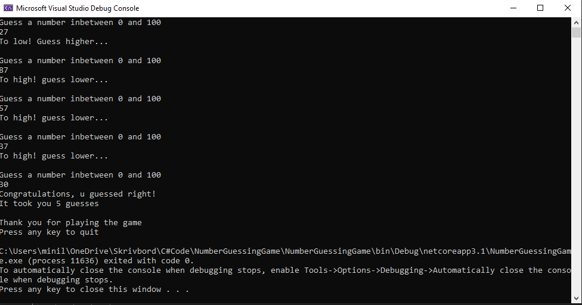
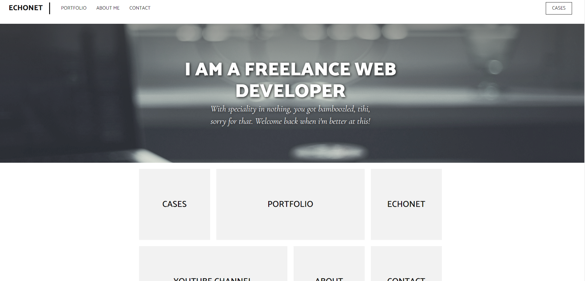
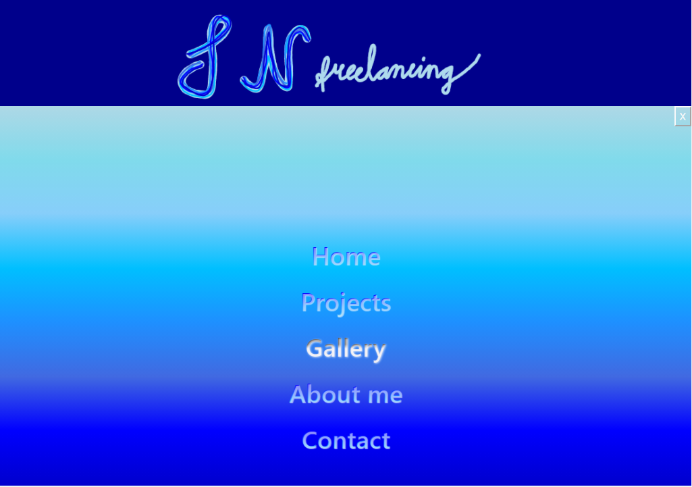

A very simple phonebook connected to a SQL-lite database. My first ever Winforms application, did get quite alot of help through videos on Youtube though.
A GuessTheNumber console game. One of the first finnished console applications i made apart from a calculator
First ever website, But, I did it with ALOT of help from Youtube tutorials and following one specific YouTuber alot a.k.a Dani Krossing

First ever website made from scratch with little help. Also first website i do using as much bootstrap as i could understand at the moment.
It is responsive and it is the by far the biggest project i've done so far and i that i also got pretty happy with the result for the knowledge i possess at the moment